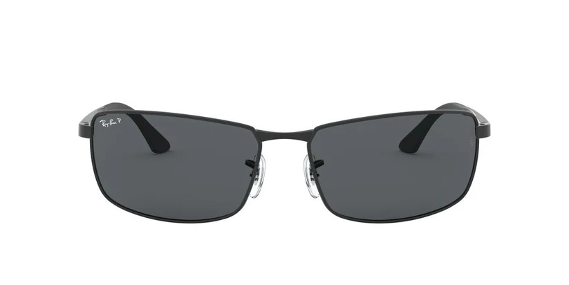

VERSACE

VERSACE
Steel Frame - VE4436U GB1/81
Promociones aplicadas:
15% DCTO- Suscríbete y descarga tu cupón 15% DCTO.
-
Satisfacción garantizada
Limpieza y ajuste gratis. -
Garantía óptica y estética
Ver garantías aquí
PRECIO:
S/445
Hasta 12 cuotas sin interés - Valor cuota: S/ 37.08
Acerca de la montura
Detalles de la montura
∧| Característica | Especificación Técnica |
|---|---|
| Material | Acetato |
| Forma | Rectangular envolvente |
| Color | Negro mate con lunas gris oscuro sólido polarizadas |
| Género | Hombre |
| Producto original con certificación de calidad G&A | |
Medidas de la montura
∧| Medida | Dimensión |
|---|---|
| Tamaño de las lunas | 57mm |
| Ancho del puente | 18mm |
| Largo de la varilla | 140mm |
| Medidas expresadas en milímetros (mm) | |
Acerca de VERSACE
∧
Versace es una reconocida casa de moda italiana que destaca por sus diseños atrevidos y elegantes. Su colección de gafas combina materiales de calidad, detalles distintivos y una identidad visual sofisticada, ofreciendo accesorios que reflejan lujo y personalidad.